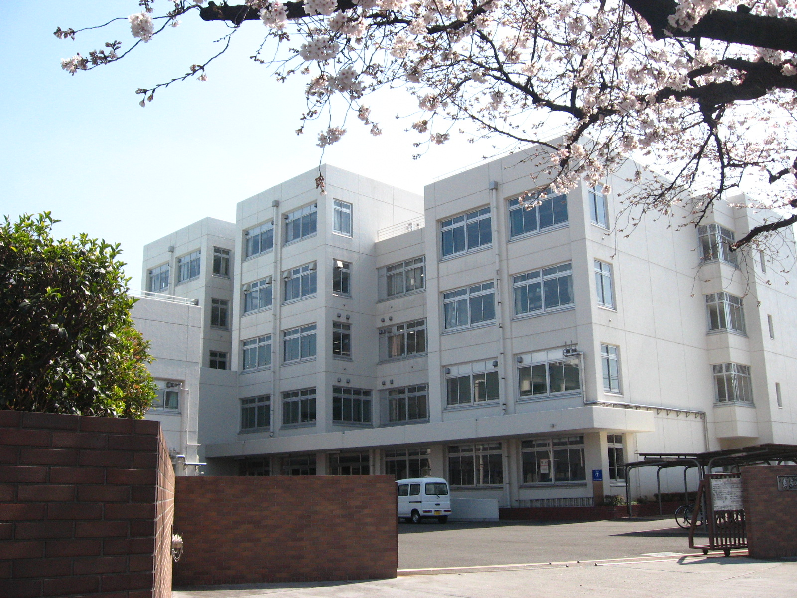
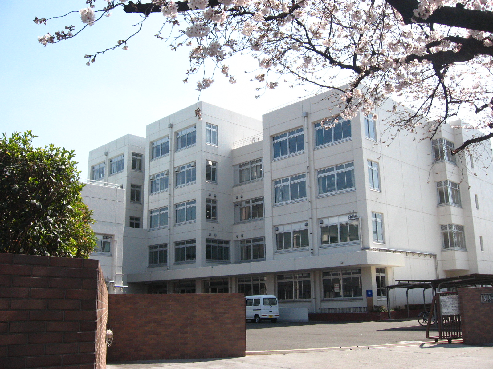
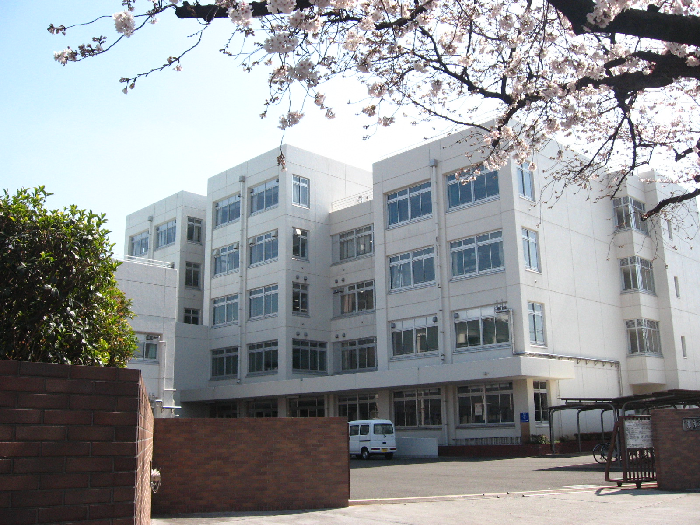

sanctuary
都立武蔵野北高校
 

主人公桜木花道が通う進学校の湘北高校のモデルは、東京都武蔵野市にある都立武蔵野北高校です。地元では『ムサキタ』の愛称で親しまれています。
この地区の公立高校では都立武蔵高校に次ぐ進学校で、偏差値は65。偏差値全国ランキングは587位のようで、主な指定校推薦には中央大、明治大、法政大、学習院大などがあり、かなり学力が高いことがわかります。そうなると湘北もかなり学力が高い進学校なのかもしれませんね。
sanctuary

主人公桜木花道が通う進学校の湘北高校のモデルは、東京都武蔵野市にある都立武蔵野北高校です。地元では『ムサキタ』の愛称で親しまれています。
この地区の公立高校では都立武蔵高校に次ぐ進学校で、偏差値は65。偏差値全国ランキングは587位のようで、主な指定校推薦には中央大、明治大、法政大、学習院大などがあり、かなり学力が高いことがわかります。そうなると湘北もかなり学力が高い進学校なのかもしれませんね。